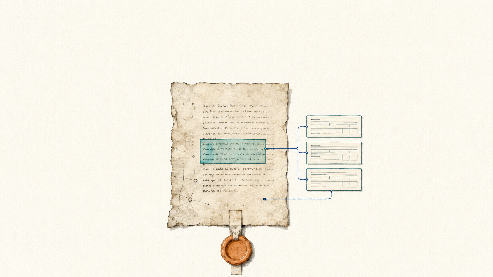

8 October 2026
Knowledge, Context und Agentic Engineering für die Forschung
Fachschaft Mittelalterstudien, Universität Heidelberg
Date 8 October 2026 Event Fachschaft Mittelalterstudien, Universität Heidelberg Audience students and early-career researchers in medieval studies Teaching language German Status planned

Specialisation
One day on site, commissioned by the student council of medieval studies and funded from quality-assurance funds. The registered title is the German form of the title of the teaching line, which gives this instance the closest name relation to the corpus among the seven. The day opens on the fundamentals of large language models and AI agents and then works practically in an agent harness throughout, from the build-up of structured project knowledge to agentic work on a research-adjacent example. Participants obtain their own frontier-model access, decided by the commissioning body.
The exercise is a small TEI and handwriting-recognition project on roughly ten charters that share persons or organisations. It produces recognition output, TEI markup, a person and organisation index and a small static edition, so the full arc from source to published edition runs inside one day. The primary charter set is a family holding of 1382 to 1414 with three connecting persons, whose legal transactions run from a court claim through an inheritance division and a house sale to a mass endowment, and whose facsimile URLs are documented in full. A chapel holding of 1385 to 1412 is prepared as the alternative.
The script of the example facsimile is late-Gothic chancery cursive in very good preservation, which is the most favourable handwritten case for vision models, so a roughly legible and systematically faulty transcription is the expected output. The recommended exercise format follows from that expectation, meaning that participants check a prepared model transcription against facsimile and TEI ground truth, with a live round trip through their own accounts as an option. Verification is therefore taught by having participants perform it, which is how the profile reads the fifth module for this instance and marks the reading as an inference.
The rights state is the tightest of the upcoming instances, because the exercise cannot run without the images. The licence file of the source corpus names CC BY 4.0 and is marked pending, and the image rights of the charter portal are undocumented in the source repository, so both need clearing before anything is distributed to participants. A copy of the Full Slide Deck exists for this instance and has not been cut yet, which is why the register deliberately carries no deck link.
Taught sequence
- Fundamentals of large language models and of AI agents as the conceptual entry.
- Build-up of structured project knowledge, meaning the instruction layer and the knowledge folder of a small working repository.
- Handwriting recognition on the charter set, checked against facsimile and TEI ground truth.
- TEI markup and a person and organisation index from the checked transcriptions.
- A small static edition as the published end state of the day.
Module coverage
- Understanding Large Language Models, taught in full The opening block, covering models and agents together, because the audience needs both before the harness is opened.
- Prompt Engineering, touched briefly No source names a prompt-engineering unit for this instance. It is present through the prompts the exercise uses, which the profile records as an inference.
- Knowledge and Context Engineering, taught in full The build-up of structured project knowledge, which the title of the instance names explicitly.
- Agentic Engineering, taught in full and the emphasis of the instance Practical work in the harness across the whole arc from source to edition, which also sets the prerequisites and separates this instance from the browser-only ones.
- Critical Perspectives and Governance, taught inside the exercise The checking format is the teaching form, meaning a prepared model transcription compared against facsimile and ground truth rather than a governance block. Recorded in the profile as an inference from the exercise design.
Materials
- Slide deck (Fachschaft Mittelalterstudien Heidelberg 2026) A copy of the Full Slide Deck exists and is unadapted, so the register field stays null and the URL is not published here. Publishing it would put full-corpus material under the name of this instance.
- Lecture Notes (Fachschaft Mittelalterstudien Heidelberg 2026) In preparation in the instance folder. Slide texts are still to be written.
- Charter package and working repository The data folder and the mini repository with its instruction layer are not set up yet, and the licence and image-rights requests gate their distribution.
Provenance
This instance is a documented specialisation of the Full Slide Deck and the Full Lecture Notes, which are maintained once and cut into five modules. What this instance selects, cuts and adds is recorded in its repository folder, workshops/2026-10-08-fachschaft-mittelalterstudien-heidelberg.